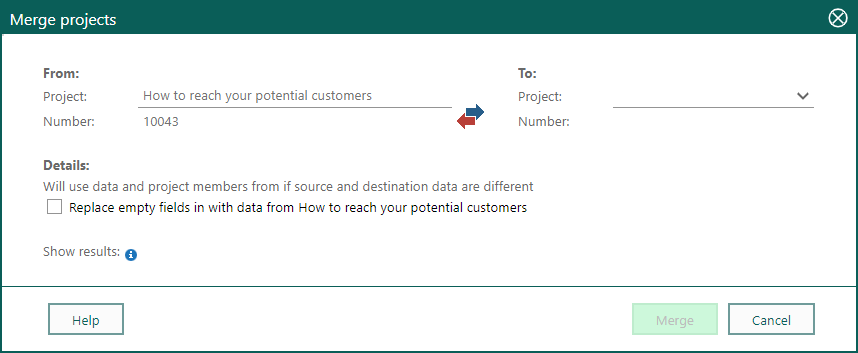

Merge projects
If you have two nearly identical projects, it is possible to merge them, including the project members and activities. The source project will then be deleted.
To do this:
Go to the project you want merge into another project. (See Use the Find screen.)
Click
 Task on the Project card and select Merge projects. The Merge projects dialog opens.
Task on the Project card and select Merge projects. The Merge projects dialog opens.
Under To, select the project you want to merge the existing project into. Start typing in the field to search for a project.
Tip
If you want to switch the From and To projects, click the
 button.
button.Select the Replace empty fields in [target project] with data from [source project] if you want to update empty fields in the target project with details from the source one.
Note
If you want to see the results before you confirm the action, click Show results
 .
.Click Merge. The following then happens:
- The projects are merged.
- Details are merged if you have specified this.
- Project members are moved or merged.
- Any associated sales are moved.
- All activities are moved. If you merge a project that is linked to a project guide with a project that has a different or no project guide, the project guide is removed from the source project. However, all follow-ups and documents are moved over to the new project and shown on the Activities section tab.
- Any previous publishing of the source and target projects is disabled.
- The source project is deleted.